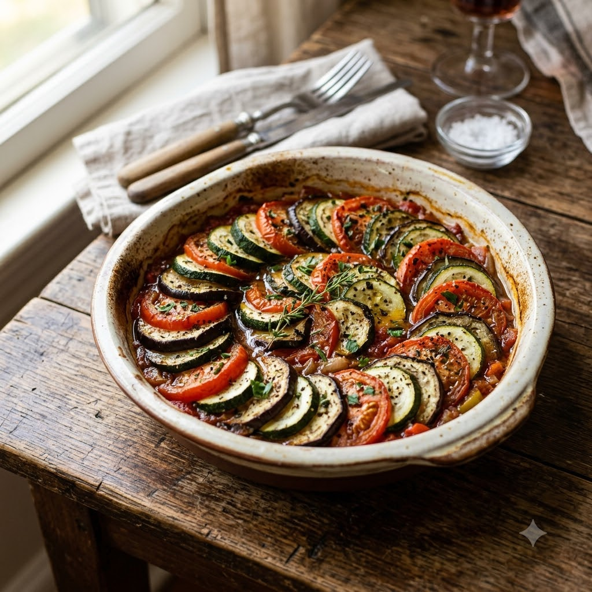

Ratatouille

Ratatouille
Chef Magic – Sauté Auto 26 min — Serves 4
Gluten-Free • Vegan • French • Healthy
Ingredients
- 1 eggplant, diced
- 1 zucchini, diced
- 1 bell pepper, diced
- 2 tomatoes, chopped
- 1 onion, chopped
- 2 cloves garlic, minced
- 3 tbsp olive oil
- 1 tsp dried herbes de Provence (or mixed herbs)
- Salt & pepper to taste
- Fresh basil to garnish
Method
1Add olive oil to the jar; select Sauté (Speed 2–4, ~130–160°C) and cook the onion for 5 minutes until soft.
2Add garlic and bell pepper; cook 4 minutes.
3Add eggplant and zucchini; sauté 8 minutes until beginning to soften.
4Add tomatoes, herbs, salt and pepper; simmer on Sauté (Speed 1–2, ~100–110°C) for 9 minutes until all vegetables are tender. Garnish with basil.